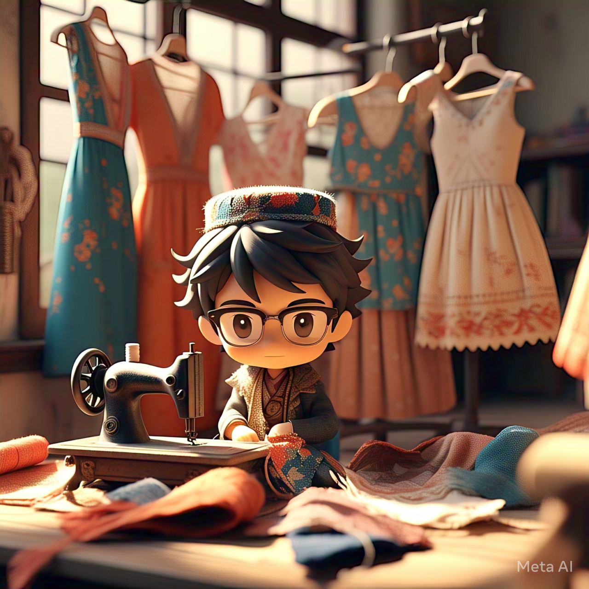

Program studi yang mempelajari tentang infrastruktur jaringan komputer dan sistem keamanan jaringan.
Desain Komunikasi Visual
Program studi yang fokus pada pembuatan konten visual kreatif untuk media cetak dan digital.
Akuntansi
Program studi yang mengajarkan pengelolaan keuangan dan pembukuan bisnis profesional.
Tata Boga
Program studi yang mempelajari seni pengolahan makanan dan manajemen kuliner.
Pemasaran
Program studi yang mempelajari strategi, riset pasar, komunikasi, dan pemanfaatan media digital untuk mempromosikan produk atau jasa secara efektif.

Tata Busana
Program studi yang mempelajari desain, teknik pembuatan, dan pengembangan produk busana, mulai dari konsep, pola, hingga produksi, sesuai tren dan kebutuhan pasar.
Tata Kecantikan Kulit Dan Rambut
Program studi yang mempelajari teknik perawatan kulit dan rambut, tata rias, serta penggunaan produk kecantikan untuk menunjang penampilan profesional sesuai standar industri.
Management Perkantoran
Program studi yang mempelajari pengelolaan administrasi, pengarsipan, layanan komunikasi, dan operasional kantor untuk mendukung kelancaran kegiatan bisnis dan organisasi.